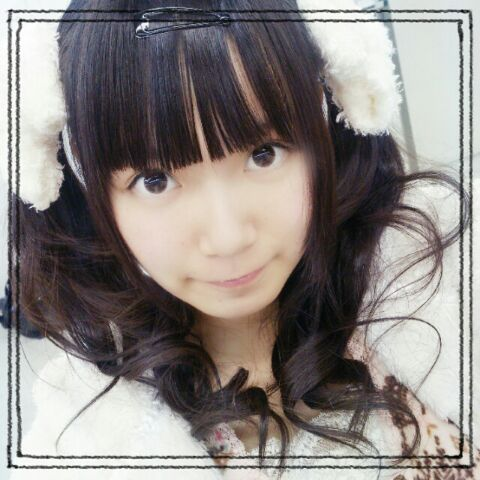

| 2013/12 23 Mon | ひめたん(*>ω<*)そ の385 |
今日は名古屋全握でした！
来てくださったみなさん
ありがとうございました＊＊
気づけば４日連続で
ステージに立たせていただけていたなんて！
ライブ大好きなひめたんには
何よりのクリスマスプレゼントです♪♪
はっ今日クリスマスイブのイブか(｀・ω・´ノ)ノ
ライブのセットリストは
シングル６曲全部披露しました
いやーしかし7thも名曲揃いです。
握手会は
まっちゅん (松村沙友理ちゃん)と
同じレーンでした！
まっちゅんありがとーヾ(＠⌒ー⌒＠)ノ
まっちゅんファンのみなさん
ありがとうございましたヾ(＠⌒ー⌒＠)ノ

ひめたんごぱんち × さゆりんびーむ
なんとね、まっちゅんがね、
ひめたんとおそろっちのヘアしたいって
言ってくれたのね！
それでねツインじゃいつもと同じやってなって
サイドポニーはー？ってなったんだけど
今回はハーフアップくるくる
(通称 ひめたん結び)を
おそろっちさんにしましたヾ(＠⌒ー⌒＠)ノ
まっちゅんファンのみなさん
仲良くしてくださってありがとうございました！
とっても楽しかったです☆
アクティブでメルヘンなレーンでしたー
今日あっという間に終わりすぎたよー
昨日の乃木どこは
妄想クリスマスとゆーことで
私服！クリスマスに着たい私服だって！

りぼーん∩( ^ω^ )∩
ひめたんりぼんが大好きでーと言いながら
いつもの制服にはアクセサリー付けらんないから
ステキな企画ですね！
ひめたんはお芝居しなかったけど
みーんなの妄想クリスマスみて
きゅんきゅんしましたー(〃ω〃)
みんなかわいかったよね！
あっ推し変はしちゃだめだぞー♪♪
クリスマスだからってそれは許されんぞー
あっそうそう
YOU PAPER 12月号
そろそろ届いていらっしゃるって
小耳にはさみまして。
たくさーんの質問に答えました！
読んだらひめたん博士になれると思う( ∀ )
ぜひチェックしてみてくださいっ

 (全握の)休憩って何してたの？
(全握の)休憩って何してたの？
過ごし方はそれぞれだけど
水分とったり メイク直ししたりして
みんな休ませていただいております
いつも待っててくれてありがとーうね◎
ひめたんがゆるキャラっぽいってことで
ふなっしーみたいに語尾に
何か付けたらどうでしょう？
そういえば
「ひめっしーだなっしー」って川後さんに言ったら
「は？調子乗んな？」と
たしなめられたことがあります(´；；｀)
誕生日には必ずする事ってある？
乃木坂入ってからは
メンバーみんなで歌をうたって
ケーキのつつきあいをするのがお決まりかな☆
今度球技大会バスケ出ることになったよ！
何かコツとかあるかな
えーっと、それはひめたんに聞いてるのかな
そうだなー技術的なことよりも
まずは思いっきり試合に参加したら
いいと思うよ( ^O^ )楽しもーう
お餅はなにをつけて食べるのが好き？？
きなこ！きなこ！きなこ！
ひめたんはいつもどうやって起きてる？
それがありがたいことに
ひめたんは朝スッキリぱっちり
起きられてしまう子なのです
そうだなーとりあえず気を張って寝るのだ！
制服じゃなくて曲の衣装では何が一番好き？
13日の金曜日のワンピース！
あの衣装だいすきヾ(＊'ω'＊)ノ
かーいーもんねっ
ドジっ子って超モテるの知ってた？
ひめたんはドジっ子とかじゃなーい！
たまたま辛子入りシュークリームが当たって
たまたま川に流されかけて
たまたまバスケゴールに激突した
それだけのこと(＊^^＊)そうたまたま！
ひめたん46
次回はやりますごめんなさいっ
いつもたくさんコメントありがとーう！
武道館の感想とか
UTBみてみるねーとか
タイムリーな声がいっぱい聞けて楽しい♪♪
普段の何気ない報告なんかも嬉しいよっ
これからも待ってるからねー
最近は乾燥がやばーよねー
喉やお肌にも多分よくないだろうから
加湿器かけてるんだけども
やっぱりつらいよー
みんながんばろー！乾燥なんかに負けないぞ！
(＊´・ω・＊)
コメント(516)
2013/12/23 23:42